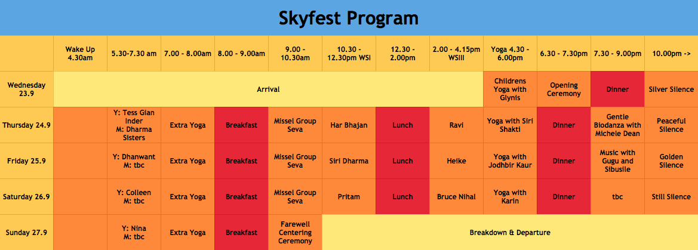

the spring kundalini yoga festival happens every year around the southern hemishpere spring equinox. the kundalini yoga community gathers near the cradle of humankind to celebrate. come join us!
meet old and new friends at a heart-warming four-day outdoor event of clean air, healthy food, early mornings, nurturing yoga, morning and afternoon workshops, evening program around the fire and camping under the stars whilst learning from south africa’s great teachers steeped in the teachings of yogi bhajan. with a daily children’s program to introduce young ones to nature and yoga! this year's theme is "there is a way through every block".
tickets
¹festival passes
adult - r700
10-16yrs - r350
3-9yrs - r220
¹day passes
adult - r250
10-16yrs - r120
3-9yrs - r90
¹family special - r1800
2 adults, 3 kids/teens (3-16yrs)
accommodation
²melody hills - r250 pppn
2 person tent - r250 pn
¹tickets available at
webtickets.co.za
²more info at melodyhillretreat.co.za
venue
sima kade bush retreat, magaliesberg: nestled between the cradle of humankind and the magalies mountains, less than 60km from joburg, lies a beautiful secluded valley. the fresh water spring enlivens and sustains a unique eco-system of indigenous trees and animals.
festival grounds and facilities: mountain side stage arena with event marquee, soft grass floors and amphitheatre terraces. natural, organic and vegan food. health drinks/foods, crafts and clothing stalls. shaded camping areas, with choices of riverside, mountainside, wooden deck or level grass. natural rock pools. medical and security facilities/personnel. clean, permanent showers and toilets. shade relaxation areas and bonfire boma. solar-powered lighting for paths and facilities. hiking trails and views of the majestic magaliesberg.
(s25deg 55.601 e27deg 36.439)
teachers
Har Bhajan was asked by Yogi Bhajan in 1985 to bring Kundalini Yoga to South Africa! A pioneer at heart, SKYFEST is a dream come true; he spearheaded natural foods here through the Fruits & Roots and Earth Products brands. Now living on Long Valley Eco Farm in the Western Cape, Har Bhajan spends his days creating sustainable systems for the post-consumer era. He trains teachers and conducts mens' workshops.
Bruce van Dongen is a Mechanical Engineer and developed the Waterfall Retreat & Environmental Centre, overlooking a beautiful gorge in KZN, with his wife Kerri. He is a lover of Kundalini Yoga for many years and uses the inspiration of healing techniques, yoga and nature to balance the pressures of the corporate world.
Colleen Dawson has been practicing Kundalini Yoga for 10 years and teaching since one year! Playing the guitar in a band of yogis is a wonderful integration of her love of yoga and music. Colleen is at heart a teacher. She taught high school sciences and wrote life and general science textbooks and teacher’s guides and is currently teaching postgraduate publishing studies. She has practiced Tai Chi, meditation and yoga at different times since she was 18.
Karin Ritchie (Geldenhuys) took her Kundalini Yoga training 2004 at Yogi Bhajan’s centre in Anandpur Sahib. Her love for healing lead her into Somatic Experiencing (www.traumahealing.com) and her knowledge of the nervous system inspires how she teaches and shares the yoga. She is a director of and advisor to the industrial supply company which she established in 1982 as well as a mother to three children.
Kerri Martinaglia completed many meditation practices over the past 11 years. She co-owns The Waterfall Retreat and Environmental Centre with her husband Bruce. After several years of training in mindfulness meditation under Rob Nairn she was asked to begin teaching Mindfulness Africa courses. She is a Mindfulness Africa board member and the registered Mindfulness Africa coordinator for KwaZulu Natal.
Lakhbir Singh was born in Amritsar, famous for the magnificent Golden Temple, the Harimandir Sahib. By training an electronic engineer, he grew up as a Sikh and loves sharing his devotion. He travelled the world serving at Gurdwaras and was the priest in the Johannesburg Gurdwara for many years. Lakhbir organises the Langar (the Sikh communal free kitchen) and introduces us to the Sikh way of life.
"I was born to be in service. At times in my life I have rebelled against the service ethic. In due course, it lead me to Kundalini Yoga at 11-11-11 in Rishikesh - love at first experience! I immediately resonated with all aspects of Kundalini, it is complete yoga. I completed my teacher training in 2012, I practice every day and teach or attend classes as much as time allows."
Pritam has tirelessly taught since the days she was asked by Yogi Bhajan to relocate to South Africa in 1987. She inspires through her knowledgeable, warm style and service. She is the Lead Teacher Trainer for Kundalini Yoga in South Africa and also teaches Numerology and EFT Emotional Freedom Technique. After decades of reaching out and healing through her store, Fruits & Roots, she now lives with her husband Har Bhajan at Long Valley Farm. They have a grown son, Hari Bhajan.
Ravi (Itta) has been teaching different forms of yoga for 32 years. She began Kundalini yoga with Pritam and Har Bhajan in 1992, attending sadhanas in Yeoville, and incorporated the teaching and practise of Kundalini Yoga into her life from that time. Ravi runs healing workshops and family constellations for women and couples and incorporates Somatic Experience, addiction counselling, and systems coaching into her yoga therapy practise. She works with pregnancy and birth, educating couples around natural birth and conscious parenting. She is partner to Jonathan since 28 years and they have 2 children.
Seda Bağcan, among the new generation of mantra singers, she is accepted as the voice coming from heaven. She assists many people in their personal development and helps them to achieve optimum health , to cure their diseases, to help them overcome their dangerous addictions, to calm their conscience and increase their awareness. She is a yoga teacher and a performing artist who conducts yoga classes. In her 4 albums, recorded with dedication and love, she aimed to mingle Turkish music sounds with the mantras: 'Sunrise, Remember, Sufi Soul, I am That I am'. All the songs are written and performed by her. Seda Bağcan is electrical and electronics engineer. Her passion of life is the trinity of 'healing, music and science'.
Shantjot Kaur (Nina Gough) has just completed her Kundalini training and is studying Sclerology. Shantjot lives an organic life in Howick, works at a health food store and lives, breathes and inspires through Ashtanga and Kundalini Yoga, nutritional help, supplements and superfoods. Nina has recently picked up her running shoes again, enjoying the freedom of a good run. She is mom to two beautiful children, Conor and Coral. Get into your big energy field in her class to connect heaven and earth.
Sharon has worked with the handicapped for many years and is a children’s yoga teacher. She loves to play the guitar. SHE IS HEADING UP CHILDREN'S CAMP. IF YOUR CHILD IS ATTENDING CHILDREN'S CAMP, PLEASE DROP HER A NOTE to onabona7@gmail.com
Siri Dharma is a senior teacher and trainer whose passion is in children's yoga and yoga for recovering addicts with whom she has worked for close on two decades. She is a lawyer, a musician and a hobby astrologer. She is foster mom to Mxolisi.
info
what to know: the pure spring water is clean and drinkable. hot and cold showers available. safe, guarded parking. lanseria is the closest domestic airport. there will be volunteers preparing the most amazing vegan meals - langar style “free-food”. donations are welcome. the festival starts at 3pm on the 23rd. come beforehand to set up.
what to bring: tent, plate, mug, water bottle, cash to shop at the bazaar, buy snacks and support the langar, yoga gear including warm clothes for early mornings and evenings, yoga mat, sun & mozzie protection, cozzie, walking shoes, sun hat, plastic bag for your garbage, camping equipment (tents will be available for hire. please pre-book) and most importantly, your unique self to celebrate and share!
what not to bring: alcohol, cigarettes, illegal substances, non-human animals. no fires whatsoever.
legal: the event organisers do not accept responsibility for injury, death, loss or damage to persons and/or belongings.
tracks for 40 day sadhana
aad such - dharma sisters
aad such - guru ganesha
right click on a track to show download option
contact
general
pritam.khalsa@gmail.com
tickets
phil@tau9.co.za
tents/rooms
melodyhill@mweb.co.za
market
tess@tau9.co.za
sponsorships
shane.smith@mweb.co.za
kids camp
glynplaying@mweb.co.za
find us on facebook
facebook.com/skyfestafrica
created by
³coco van oppens & heinrich degener - pics
hari bhajan singh khalsa - site
ivan brown - logo
³coco has pics from previous festivals for sale
hint: hide this text so you have a better view of our gallery. use the - & < > buttons.